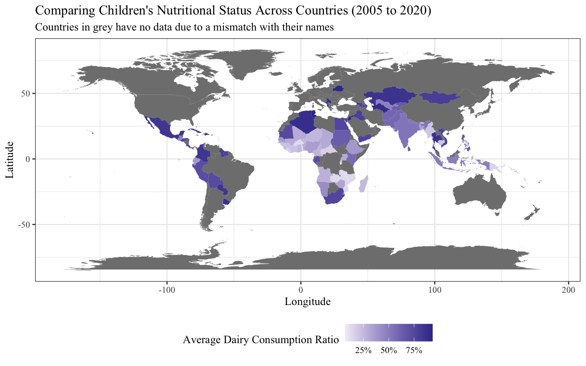
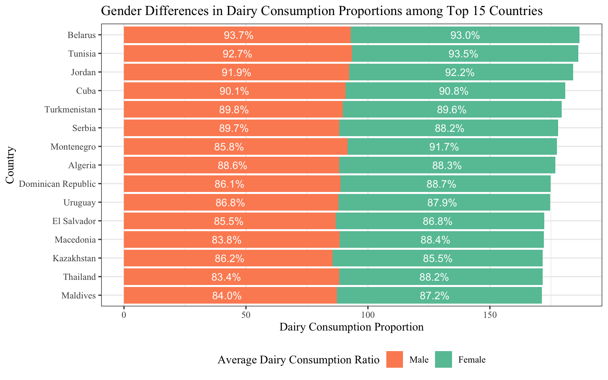
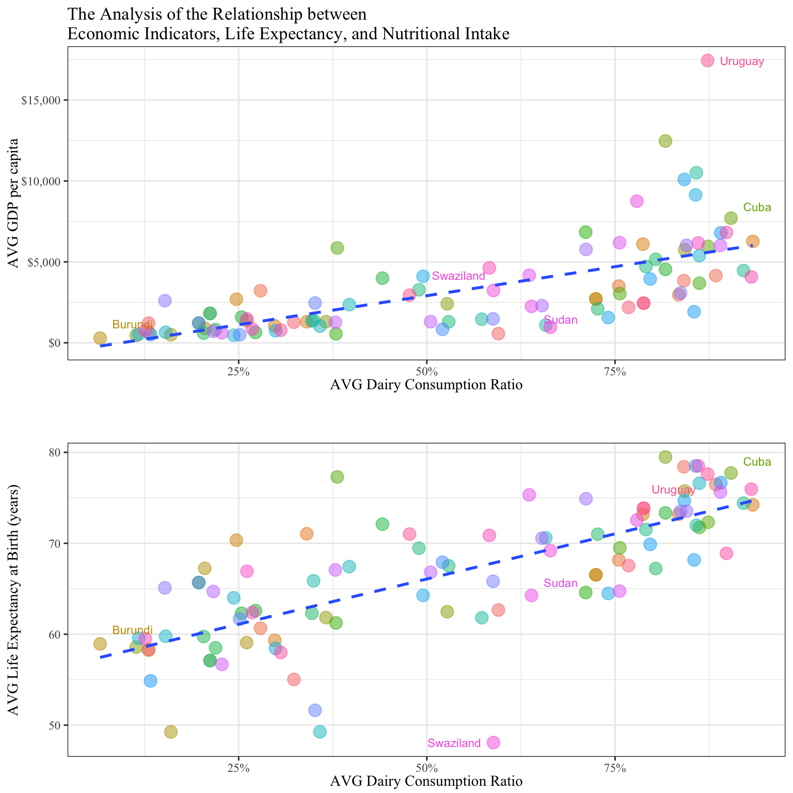
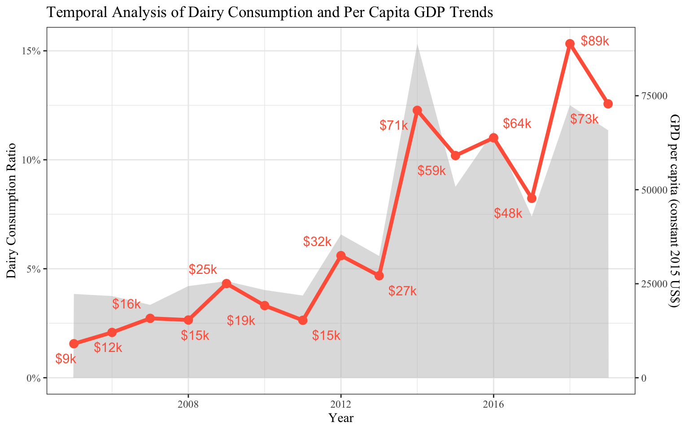

The Growth Code
Uncovering the Secret Link Between Child Nutrition and Economic Development
With the rapid global economic growth and population increase, the impact of early childhood nutrition on a country’s overall development is receiving increasing attention. Consumption of dairy products is a crucial aspect of children’s nutrition, but the proportion of dairy consumption varies significantly among different countries. By analyzing the relationship between children’s dairy consumption, population growth, economic development, and health status, we can gain a deep understanding of the close connection between children’s nutrition and national development. This understanding can guide policymakers and stakeholders to prioritize investments in children’s nutrition, leading to the formulation of policies that support children’s healthy growth and contribute to the long-term economic and social progress of the country.
Children’s Nutritional Status Across Countries
This map displays a comparison of the nutritional status of children in different countries based on the “Food group - Dairy (milk, infant formula, yogurt, cheese) (6-23 months)” as an assessment indicator. The shades of purple and white are used to reflect the proportion of dairy consumption. This map can help analyze the proportion of dairy consumption among children in different countries during specific time periods and further understand the differences in early childhood nutrition across countries.
Gender Differences in Dairy Consumption Proportions

This bar chart compares the gender differences in dairy consumption proportions among the top 15 countries. Each country’s bar is divided into blue and orange parts representing male and female dairy consumption proportions. The distance between bars of the same color indicates the difference in consumption between genders. Overall, males consume slightly more dairy than females, but the difference is not significant.
Relationship between Economic Indicators, Life Expectancy, and Nutritional Intake

This scatter plot illustrates the relationship between per capita GDP, life expectancy, and the proportion of children’s dairy product consumption. Each country is represented by a scatter point, and the added trend line reveals that as the proportion of children’s dairy product consumption increases, both per capita GDP and life expectancy also increase correspondingly.
Temporal Analysis of Dairy Consumption and Per Capita GDP Trends

This visualization combines an area chart (proportion of dairy product consumption) and a line chart (per capita GDP). Overall, it shows that over time, both the proportion of dairy product consumption and per capita GDP have been increasing. When the proportion of dairy product consumption reaches its peak, the corresponding year also sees the peak in per capita GDP(In 2014, the dairy consumption ratio reached its peak at 15.33, while per capita GDP also reached its peak at $71k). Therefore, it can be concluded that the level of dairy product consumption has an impact on per capita GDP.